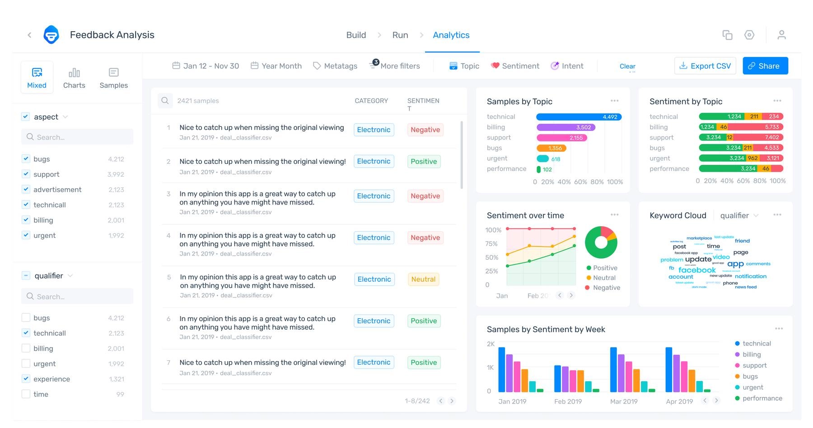
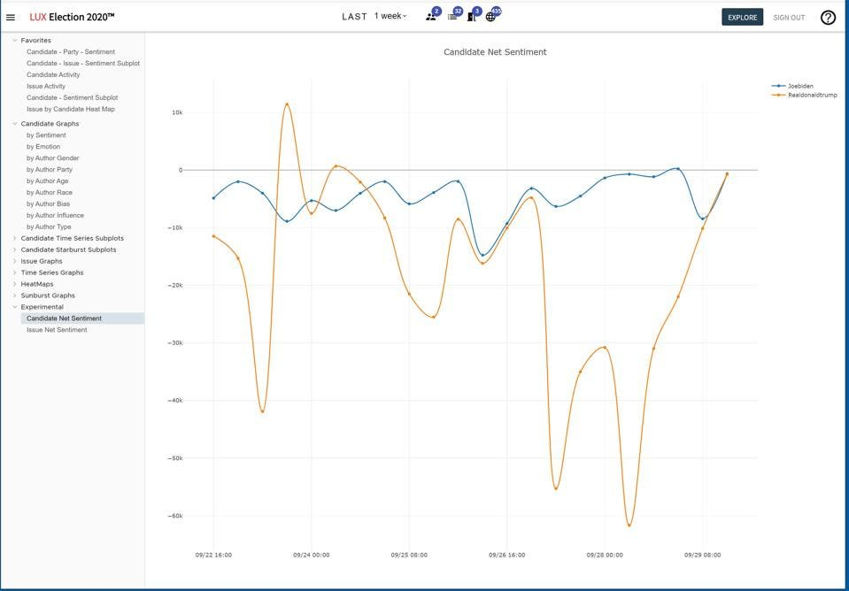
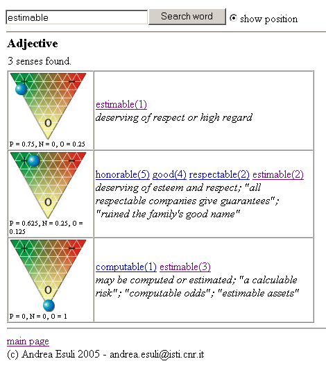
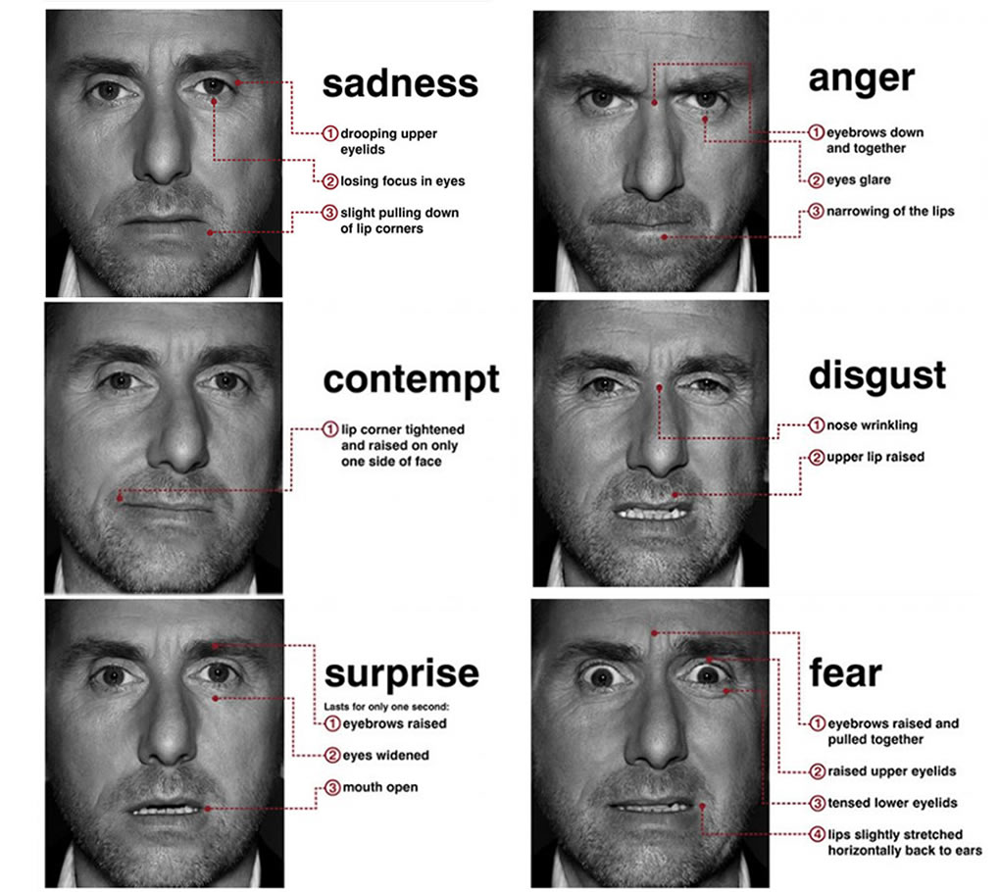
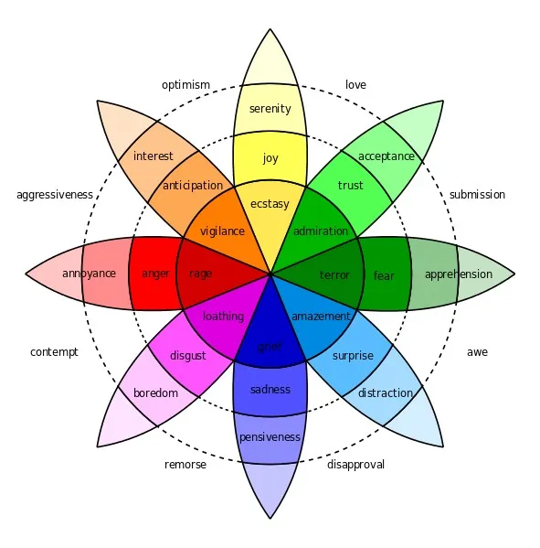
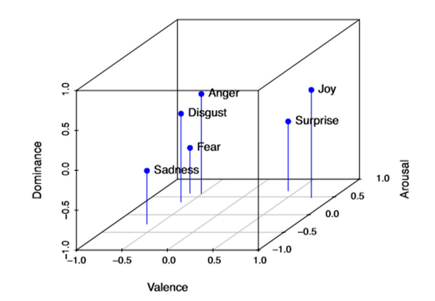

Linguistic Data Science
John P. McCrae - University of Galway
Course at ESSLLI 2024

Corpora and Data
Types of Linguistic Data
- Corpora - collections of texts
- Lexicons - information about words
- Knowledge bases - structured information about the world
- Typological databases - information about languages
Plain-text Corpora
- Sources such as Project Gutenberg, Wikipedia
- Curated corpora such as British National Corpus and Open American National Corpus
- Massive web corpora such as C4
- 300GB of English data, 9.7TB total!
Annotated Corpora
- Corpora with syntactic, semantic and other annotations
- Universal Dependencies
- Penn Treebank
- PropBank
Universal Dependencies
| ID | Form | Lemma | UPOS | XPOS | Head | Dep |
|---|---|---|---|---|---|---|
| 1 | The | the | DET | Definite=Def|PronType=Art | 2 | det |
| 2 | prevalence | prevalence | NOUN | Number=Sing | 0 | root |
| 3 | of | of | ADP | _ | 4 | case |
| 4 | discrimination | discrimination | NOUN | Number=Sing | 2 | nmod |
| 5 | across | across | ADP | _ | 7 | case |
| 6 | racial | racial | ADJ | Degree=Pos | 7 | amod |
| 7 | groups | group | NOUN | Number=Plur | 2 | nmod |
| 8 | in | in | ADP | _ | 10 | case |
| 9 | contemporary | contemporary | ADJ | Degree=Pos | 10 | amod |
| 10 | America | America | PROPN | Number=Sing | 2 | nmod |
Parallel Corpora
Parallel Corpus Example
| English | Irish |
|---|---|
| Monitoring of the Implementation of Certain Commitments in your Language Scheme | Tag: faireachán ar chur i bhfeidhm gealltanais áirithe de bhur scéim teanga |
| Hope you are keeping well. | Beatha agus Sláinte. |
| Thank you for your co-operation on this matter. | Gabhaim buíochas leat as ucht do chomhoibriú ar an ábhar seo. |
| Kind regards, | Is mise, le meas, _______________ |
Lexicons
- Open English WordNet - English
- BabelNet - 271 languages
- FrameNet - English
Knowledge Bases
Typologies
Corpus Selection and Construction
Corpus linguistics
Analysis of corpus reveals hidden patterns in language
New tools allow us to find new information hidden in the corpus
Collocations
Collocations are words that occur together
Firth: "You shall know a word by the company it keeps"
Corpus selection
- Spoken/written
- Dialect
- Genre
- Time period
- Size
- Multimodality
Corpus annotations
- Syntactic annotations
- Semantic annotations (e.g., word senses)
- Classifications (e.g., sentiment)
- Parallel texts
Specialized corpora
- Learner corpora
- Historical corpora
- Noisy user-generated text
Types, tokens and morphology
Types and tokens
- Tokens refer to the individual words in the text
- Types are the distinct words we see in the text
I know that this is simple
6 Tokens, 5 Types
Tokenization
 Source: https://spacy.io/usage/spacy-101
Source: https://spacy.io/usage/spacy-101Non-linguistic tokens
- Hashtags/mentions (#amazing, @john)
- URLs
- Emoticons (:-O, 😀)
Compounds
- bookshelves, bedroom, policeman
- Flachbildschirmfernseher (German: flat screen TV)
- bestuurdersaansprakelijkheidsverzekering (Dutch: drivers' liability insurance)
Tokenization in Asian Languages
- Chinese, Japanese and Thai do not use spaces at all
- Other languages (Vietnamese, Tibetan, ...) space every syllable
- Tokenization for these languages is non-trivial
Aside: What is a word?
- Occurs between spaces (and punctuation)
- Can be a single utterance
- Has a distinct meaning
- Syntactically free
- Has an inflectional paradigm (e.g., plural, past tense, genitive case)
- (Useful as a) headword in a dictionary
Mostly overlapping definitions!
Subword tokenization
Maybe a human definition of word is not the best?
Super ##cali ##frag ##il ##istic ##ex ##pi ##ali ##do ##ciousWordPiece (Wu et al., 2016)
- Initially use only characters as words
- Build a probability model on the corpus
- Merge two most probable words
- Repeat until limit of words is reached of likelihood is below a threshold
Morphology
- Lemmatization: Reduce words to their base form
- Stemming: Reduce words to their stem
Morphology Examples
| Word | Lemma | Stem |
|---|---|---|
| cars | car | car |
| caring | care | car |
| taught | teach | taught (!?) |
Stemming is not linguistically motivated
Inflection and Derivation
- Inflection captures the lemma and the change that has happened to it
- writing = write + PRESENT + PROGRESSIVE
- Derivation is how new words are formed
- agreement = agree + MENT
Morphological Analysis
- English is quite simple
- Some languages (Chinese, ...) have no morphology
- In other languages one word can be a whole sentence
وسيكتبونها /wasayaktubuwnahA/ 'and they will write it'
Example: English Clitics
Example: English Clitics
- Clitics are words that are pronounced as part of another word
- In particular we will look at n't
- Does the use of more clitics indicate a more informal text?
Social Media Analytics
Social Media - Enterprise
Image source: https://monkeylearn.com/blog/sentiment-analysis-of-twitter/Social Media - Politics
Image source: https://www.forbes.com/sites/waynerash/2020/09/29/new-big-data-sentiment-analysis-show-potential-biden-election-landslide/Ethical Data Collection
- Copyright
- Data Protection/Privacy
- Bias (gender, race, sexuality, ...)
- Represntativeness
Data Collection
- API
- Web Scraping
- Crowdsourcing
- Data Purchase
Noisy User-Generated Content
- Spelling
- Grammar
- Slang
- Emojis
- Code-mixing
Sentiment, Emotion, Sarcasm
Sentiment Analysis
- Predicting sentiment of text
- Binary (positive/negative) or graded (0-5)
Challenges of Sentiment Analysis
- Indirectness: "Although the product is disliked by many, it is still popular"
- Ambiguity: "The concert was crazy" vs. "The traffic was crazy"
- Irony: "I love it when my flight is delayed"
- Negation: "I don't like it"
Lexicon Approaches
Generate a lexicon of positive and negative words
Use counts to evaluate sentiment
| Positive | Negative |
|---|---|
| good | bad |
| great | terrible |
| excellent | awful |
| ... | ... |
SentiWordNet
Machine Learning Approaches - Features
- Sentiment features (sentiment lexicon)
- Linguistic features (n-grams, ...)
- Social Media features (hashtags, emoticons, …)
- Other features (negation)
- Feature selection and weighting (occurrence (binary), freq, PMI, TF-IDF)
Machine Learning Approaches - Deep Learning
- Deep neural networks (LSTM, transformer, ...)
- Pre-trained Language Models
- Prompt-based Learning
Aspect-Based Sentiment Analysis
"The camera’s focus was bad, but has a great size and is easy-to-use."
Aspects:
- Focus (negative)
- Size (positive)
- Ease-of-use (positive)
Emotion Analysis
- Emotion
- angry, sad, joyful, fearful, ashamed, proud, elated
- Mood
- cheerful, gloomy, irritable, listless, depressed, buoyant
- Interpersonal stances
- friendly, flirtatious, distant, cold, warm, supportive, contemptuous
- Attitudes
- liking, loving, hating, valuing, desiring
- Personality traits
- nervous, anxious, reckless, morose, hostile, jealous
Emotion models - Ekman
Source: https://sites.tufts.edu/emotiononthebrain/2014/12/08/am-i-in-trouble-interpreting-facial-expressions/Emotion models - Plutchik

Source: Machine Elf 1735 (public domain)Emotion models - Lövheim (VAD)
Source: Mitrut et al. (2019) Emotion Classification Based on Biophysical Signals and Machine Learning TechniquesHands-on: Sarcasm Detection
Summary
Summary
- Corpora, lexicons, knowledge bases, typologies are the main types of linguistic data
- Sourcing and processing textual data is a key challenge
- Sentiment analysis is a natural application of linguistic data science